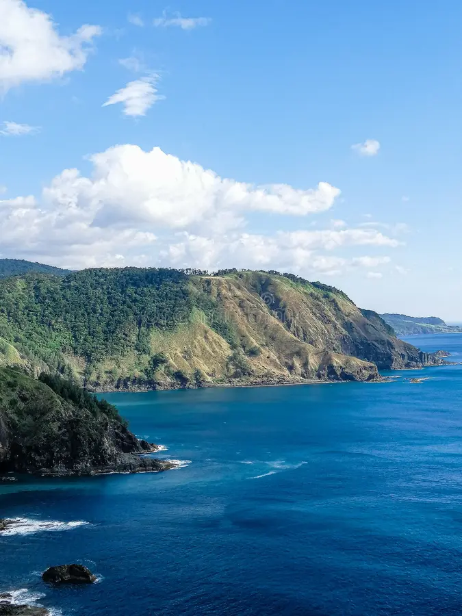
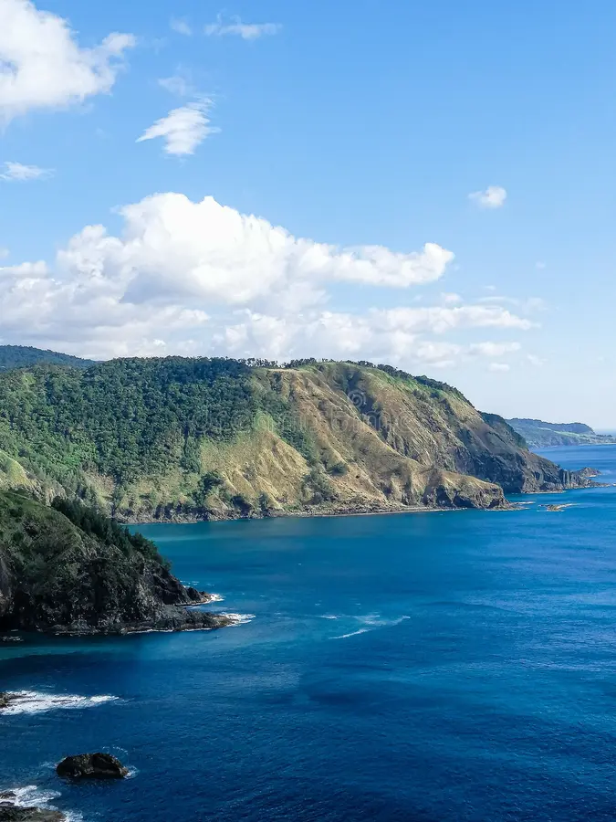

Solo Trekkers is a guide for anyone looking to reconnect with themselves through the power of nature. Going solo on a hike isn't just about getting away from the noise—it's about finding clarity and rediscovering what really matters. Be one of us now!
 

Our mission is to guide you on a journey that brings growth, clarity, and transformation. Through every trek, we hope to inspire a deeper connection with yourself and the world around you. Solo hiking is not just an escape—it’s a way to find inner peace and personal growth. We believe that time spent in nature leads to a stronger sense of self and renewed purpose. And Solo Trekkers wants to help you rediscover what truly matters.